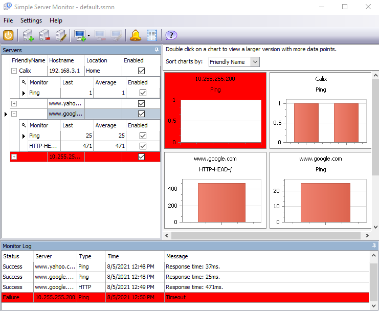

Use the course chatbot and the references provided to answer the following questions and solve the following problems.
Silos? Consult LinkedIn Learning and Wikipedia.
(50) 1. Briefly state whether companies benefit from maintaining separate departments for data networking, and their phone systems.
Troubleshooting-key skill? Consult LinkedIn Learning and Wikipedia.
(50) 2. Reflect on what you have learned in this networking course-the concepts and also the experiences of getting both physical and virtual devices to work. Think about this in terms of any industry and the new devices that you have learned about. Briefly explain why troubleshooting is a valuable skill for any employee's toolkit.
For each of the following scenarios, briefly state whether a telephone line or a trunk should be used, and why: (50) 3. the connection from your home to the local telephone company (50) 4. the connection between a large company’s PBX and the telephone company (50) 5. the connection between two central offices
Your company needs to create or install an application or service that allows employees to dial in using a phone, or use some type of Internet connection from a remote (read not at the company) location and using a single connection access their e-mail, voice mail and data files. Investigate the necessary hardware and software requirements.
(50) 6. What kind of system or systems would allow this? (50) 7. Briefly describe the necessary hardware requirements. (50) 8. Briefly describe the necessary software requirements.
Consult the course chatbot. Use Hyper-V and create an Virtual Machine. Install Asterisk, a VOIP server, on it. Reference: Asterisk on Ubuntu
(50) 9. Briefly describe the benefits to an organization of running an Asterisk VOIP server.
(50) 10. Research the internet and then briefly explain how to connect an Asterisk VOIP server to the POTS.
Use the Snipping tool to make a screenshot of your running Asterisk server. (100) 11. Save the screenshot of the Asterisk Server "Ex4" in your ' ' folder. You will be combining screenshots from several exercises at the end of this assignment, just as you did in Formative00-PDF File Creation.
Consult the chatbot and research the Simple Server Monitor and similar programs.
Simple Server Monitor has the ability to send emails when a device fails. Consider who would be the recipient of these types of emails. (50) 12. Briefly explain the benefit to an organization of this feature.
(50) 13. Make a screenshot of the running Simple Server Monitor application. Make sure that the 'Servers', 'Monitor Log' and the charts windows are visible. It will look something like this:  Save the screenshot as "Ex5" in your ' ' folder. You will be combining screenshots from several exercises at the end of this assignment, just as you did in Formative00-PDF File Creation.
Use a web browser to verify that you have published your website to https://classes.winona.edu/... Check that your name, StarID, email, class, semester, section and all of your answers are correct and visible. From the menu choose File>Print... and using "Microsoft Print to PDF" save a copy of this assignment as a .pdf file in your ' ' folder.
(50) 14. Save your file 'WebPage.pdf' in your ' ' folder.
Create one .pdf (portable document format) file from the screenshots that you have taken by following these steps.
(50) 15. Save your file 'ScreenShots.pdf' in your ' ' folder.
Use PDFill to merge the WebPage.pdf file with the ScreenShots.pdf file, and save it as 'Summative11.pdf' in your ' ' folder.
(50) 16. Upload your file 'Summative11.pdf' to the D2L 'Summative11' Assignment folder.
Use a browser to view your completed and published website at: https://classes.winona.edu/... Ensure that you have linked this assignment on your home page. Note that your screenshots do not have to be completed to perform this step.